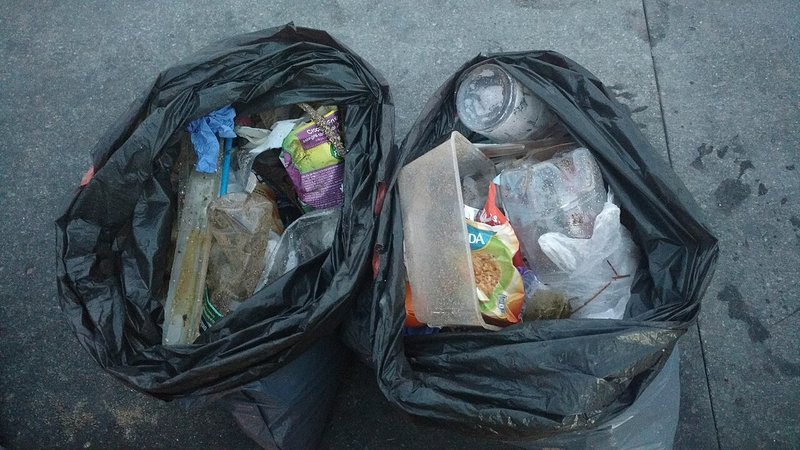

從今天放學就能開始
知道海廢很嚴重之後，你可以做的事比你想像的多。 關鍵不是一次做完，而是從今天的一件小事開始。
光「淨灘」不會解決海廢問題——撿一年抵不過丟一天。真正的解法，是從不要讓垃圾出門開始。下面把行動拆成四個層級：你一個人、你跟同學、你跟家人、你跟更多人。每一級的第一件事，都是今天就可以做的事。

🎒 個人層級
海廢的故事都從一個人開始——一支隨手丟的瓶蓋、一根懶得拒絕的吸管。最有效的環保行動，其實是不買、不拿、不用那些你本來就不太需要的東西。
- ✓自備水壺。一個學期省 100+ 個寶特瓶。
- ✓跟店員說「不要吸管」。一句話而已。
- ✓自備購物袋+餐具。書包永遠放一個帆布袋。
- ✓內用 > 外帶。想喝飲料？坐在店裡喝。
- ✓看到地上垃圾撿起來。一天一件，一年 365 件。
- ✓瓶蓋鎖緊再丟。瓶蓋是台灣海廢第 1 名。
- ✓丟口罩前剪斷耳掛。避免動物被纏住。

🏫 校園層級
一個人改變不了一所學校，但一個人加上幾個同學就可以。把今天學到的東西帶回班上、帶到合作社、帶上學校廣播——一個訊息傳出去，就會在很多地方同時冒出來。
- ✓發起「全班自備水壺挑戰」。一週不買瓶裝水。
- ✓跟導師爭取設置回收站。寶特瓶、紙、鋁罐分開。
- ✓把這個網站分享給其他班。一個人知道→全校知道。
- ✓邀請台南社大來辦講座（請老師幫忙聯絡）。
- ✓畢業旅行不買紀念品塑膠玩具。一次旅行可以省好幾袋。

🏠 家庭層級
家裡的每一次採買、每一頓晚餐都會留下垃圾——但也都是減量的機會。跟爸媽溝通可能會卡住，從一件具體的小事開始就好：下次外帶時你來說「不要塑膠袋」。
- ✓跟爸媽說「我們這次外帶不要塑膠袋」。讓他們知道你在乎。
- ✓家裡用環保餐具。少用免洗筷。
- ✓選棉質衣服。化纖洗一次掉 70 萬根微塑膠纖維。
- ✓不買塑膠微粒洗面乳/牙膏（看成分標示「polyethylene」要避開）。
- ✓選大包裝零食，別買單顆獨立包裝。
- ✓支持友善蚵農。買改用環保浮具的蚵農。

🌍 行動層級
有些事情靠一個家庭做不完——比如政策、產業、整個產業鏈的轉型。但你可以投票、可以寫信、可以加入團體、長大可以選跟海有關的工作。很多大改變都從幾個小孩寫信開始。
- ✓參加官方淨灘。荒野保護協會、社大、海保署都有。
- ✓幫忙上傳資料。用「愛海小旅行」app 記錄你撿的東西。
- ✓寫信給超商品牌。請他們減少包裝、多用回收材質。
- ✓支持公投/政策。比如「禁用一次性餐具」、「擴大押瓶費」。
- ✓長大後做相關工作。海洋學家、環境工程師、政策研究員、永續設計師。
By the Numbers記住這個比例
淨灘撿 1 公斤垃圾 ≈ 個人少用 100 個塑膠袋的效果。
「源頭減量」永遠比「事後撿拾」有用。
但這不是說淨灘沒用——淨灘的真正意義是：
- 讓你親眼看見問題（震撼比說教有效）
- 產生資料（讓政策有依據）
- 連結社群（一群人比一個人強）
Today · 今天從一件小事開始
兩週後我們真的會去漁光島月牙灣，你會親手撿、親手記錄、親手把資料上傳到全國平台。在那之前——從今天回家路上就可以開始。
- 今晚問家人：「我們家有沒有自備水壺？」
- 明天早餐：「不要吸管」
- 放學路上：撿一個地上的瓶蓋
你不需要成為環保超人。你只需要從一件小事開始。